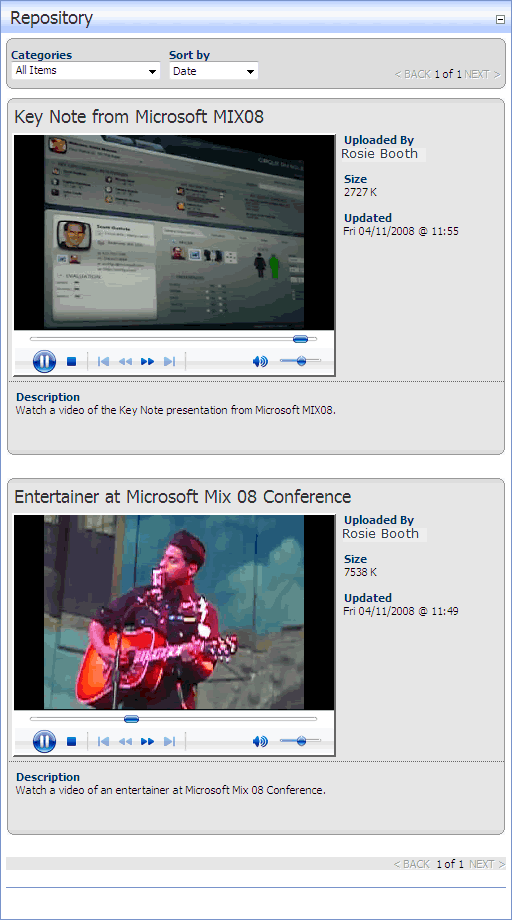

By applying the Nifty Video skin, the Repository module can be used to display a list of videos. Each listing displays the video title, contributor's name, video size, description, and the date and time when the video was last updated. Controls to play, stop, restart and skip along the video are displayed as is volume control.
Categories and sorting are enabled on this skin.

The Nifty Video Repository